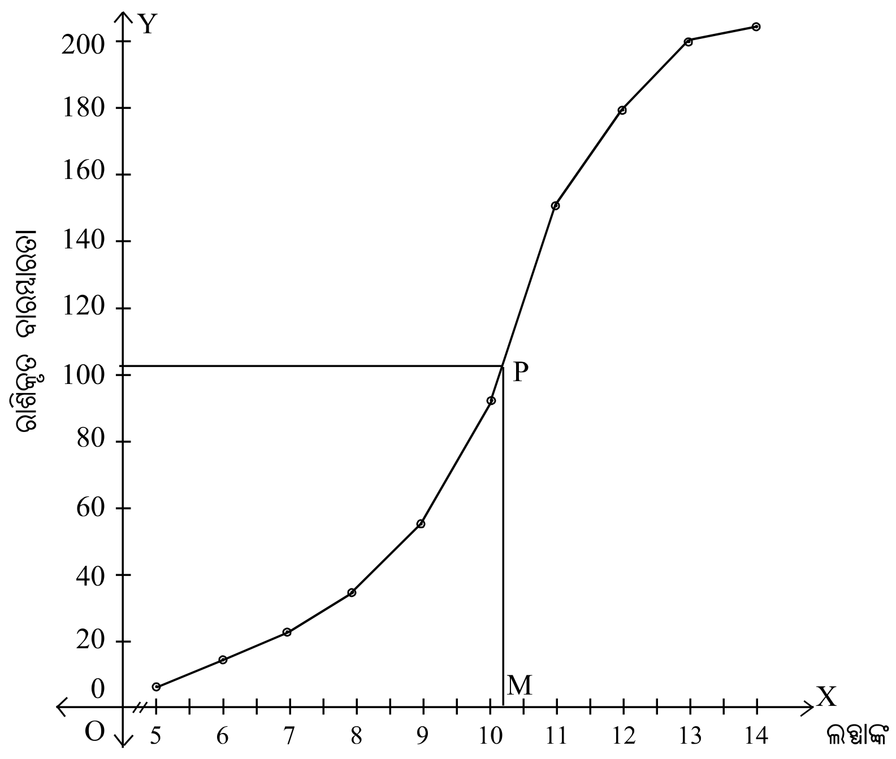
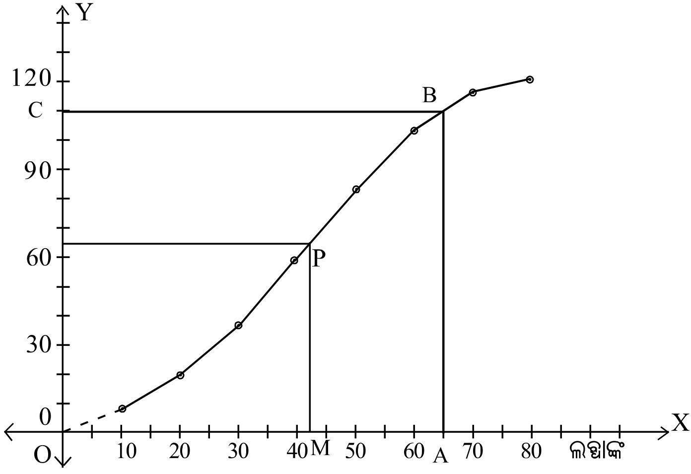

5.1 ଉପକ୍ରମଣିକା Introduction ନବମ ଶ୍ରେଣୀରେ ତୁମେମାନେ ପରିସଂଖ୍ୟାନର ଐତିହାସିକ ପୃଷ୍ଠଭୂମି, ସଂଜ୍ଞା, ତଥ୍ୟ, ଯଥା- ସାଂଖ୍ୟିକ ତଥ୍ୟ (Numerical data), ପ୍ରାଥମିକ ତଥ୍ୟ (Primary data) , ପରୋକ୍ଷ ତଥ୍ୟ (Secondary data) ଇତ୍ୟାଦି ସମ୍ବନ୍ଧରେ ଅବଗତ ଅଛ । ସଂଗୃହୀତ ତଥ୍ୟର ଉପସ୍ଥାପନା, ବାରମ୍ବାରତା ବିତରଣ ସାରଣୀ (Frequency distribution table) ମାଧ୍ୟମରେ କରିଥିଲ ଏବଂ ତତ୍ ସହିତ ଟାଲି ଚିହ୍ନ ଦ୍ୱାରା ଲବ୍ଧାଙ୍କଗୁଡ଼ିକର ବାରମ୍ବାରତା ନିରୂପଣ କରି ରାଶିକୃତ ବାରମ୍ବାରତା ମଧ୍ୟ ନିର୍ଣ୍ଣୟ କରିଥିଲ । ବାରମ୍ବାରତା ନିର୍ଦ୍ଦେଶକ ରେଖାଚିତ୍ର (Frequency polygon), ହିଷ୍ଟୋଗ୍ରାମ (Histogram), ବୃତ୍ତଲେଖ (Pie-chart) ଓ ଛବିଲେଖ (Pictograph) ପ୍ରଭୃତି ଲୈଖିକ ପରିପ୍ରକାଶ ମାଧ୍ୟମରେ ତଥ୍ୟାବଳୀର ସଫଳ ଉପସ୍ଥାପନା କିପରି ହୁଏ ତାହା ତୁମେ ଜାଣିଛ । ଏ ସମସ୍ତ ଆଲୋଚନାକୁ ଭିତ୍ତିକରି ଏକାଧିକ ସାଂଖ୍ୟିକ ତଥ୍ୟର ଏକକ ପ୍ରତିନିଧିତ୍ୱ କରୁଥିବା ସଂଖ୍ୟା ଅର୍ଥାତ୍ କେନ୍ଦ୍ରୀୟ ପ୍ରବଣତା ସମ୍ବନ୍ଧରେ ଆଲୋଚନା କରିବା ଏ ଅଧ୍ୟାୟର ମୁଖ୍ୟ ଉଦ୍ଦେଶ୍ୟ ।
5.2 କେନ୍ଦ୍ରୀୟ ପ୍ରବଣତା Central Tendency ଆଜିକାର ବିଭିନ୍ନ ପତ୍ରପତ୍ରିକାରୁ ବିଭିନ୍ନ ବିଷୟ ସମ୍ବଳିତ ଆମେ ବହୁତ ତଥ୍ୟ ସମ୍ବନ୍ଧରେ ଅବଗତ ଥାଉ, ଯେଉଁ ତଥ୍ୟଗୁଡ଼ିକରୁ ବିଭିନ୍ନ ବିଷୟ ସମ୍ବନ୍ଧରେ ସ୍ପଷ୍ଟ ସୂଚନା ମିଳିଥାଏ । ଏକାଧିକ ସାଂଖ୍ୟିକ ତଥ୍ୟ ଦତ୍ତ ଥିଲେ ସେଗୁଡ଼ିକୁ ପ୍ରତିନିଧିତ୍ୱ କଲା ଭଳି ଗୋଟିଏ ସଂଖ୍ୟା ଦ୍ୱାରା ପ୍ରକାଶ କରିବାର ଆବଶ୍ୟକତା ଥାଏ । ନିମ୍ନ ଉଦାହରଣକୁ ଦେଖ । ଦୁଇଜଣ ପରୀକ୍ଷାର୍ଥୀଙ୍କର ପାଞ୍ଚଟି ବିଷୟରେ ଥିବା ପରୀକ୍ଷା ନମ୍ବର ନିମ୍ନରେ ଦିଆଯାଇଛି ।
ସାହିତ୍ୟ ଇଂରାଜୀ ବିଜ୍ଞାନ ଗଣିତ ସାମାଜିକ ପାଠ ଲିଜା 70 60 78 90 87 ପୂଜା 78 68 75 87 86
ସାରଣୀକୁ ଅନୁଧ୍ୟାନ କଲେ ଜଣାଯାଏ, ଲିଜା ତିନୋଟି ବିଷୟରେ ପୂଜା ଅପେକ୍ଷା ଭଲ କରିଛି । ପୂଜା ଦୁଇଟି ବିଷୟରେ ଲିଜା ଅପେକ୍ଷା ଭଲ କରିଛି । ଗୋଟିଏ ବିଷୟରେ ଲିଜା ଓ ପୂଜା ଉଭୟଙ୍କର ଫଳାଫଳ ପ୍ରାୟ ପାଖାପାଖି ।
ତେଣୁ ଦୁଇଜଣ ପରୀକ୍ଷାର୍ଥୀଙ୍କର ପରୀକ୍ଷା ଫଳକୁ ତୁଳନା କରି ଏକ ନିର୍ଦ୍ଦିଷ୍ଟ ସିଦ୍ଧାନ୍ତରେ ଉପନୀତ ହେବା ସହଜ ନୁହେଁ; କାରଣ ପ୍ରତ୍ୟେକଙ୍କର ପରୀକ୍ଷାଫଳ ପାଞ୍ଚଟି ସଂଖ୍ୟାରେ ପ୍ରକାଶିତ । ଯଦି ଏହି ପାଞ୍ଚଟି ସଂଖ୍ୟା ବିଶିଷ୍ଟ ଫଳାଫଳକୁ ଗୋଟିଏ ସଂଖ୍ୟାରେ ପ୍ରକାଶ କରିପାରିବା, ତେବେ ପରୀକ୍ଷାଫଳ ତୁଳନା ସହଜସାଧ୍ୟ ତଥା ସିଦ୍ଧାନ୍ତମୂଳକ ହେବ । ଏକାଧିକ ସଂଖ୍ୟା ସମ୍ବନ୍ଧିତ ତଥ୍ୟକୁ ଗୋଟିଏ ସଂଖ୍ୟାରେ ପ୍ରକାଶ କରିବା ଲାଗି ତଥ୍ୟ ଅନ୍ତର୍ଭୁକ୍ତ ସମସ୍ତ ସଂଖ୍ୟାର ପ୍ରତିନିଧିତ୍ୱ କଲା ଭଳି ଗୋଟିଏ ସଂଖ୍ୟା ନିର୍ଣ୍ଣୟ କରାଯାଏ ଓ ଏହି ପ୍ରତିନିଧିତ୍ୱ ସଂଖ୍ୟାକୁ ତଥ୍ୟାବଳୀର କେନ୍ଦ୍ରୀୟ ପ୍ରବଣତା କୁହାଯାଏ । ପରୀକ୍ଷାର୍ଥୀଙ୍କର ପରୀକ୍ଷାଫଳ ତୁଳନା କରିବା ଲାଗି ଆମେ ପ୍ରତ୍ୟେକର ପାଞ୍ଚଟି ବିଷୟର ହାରାହାରି (Mean ବା Average) ନମ୍ବର ନିର୍ଣ୍ଣୟ କରିଥାଉ ।
\text{ଲିଜାର ହାରାହରି ନମ୍ବର} = \frac{\text{ମୋଟ ନମ୍ବର}}{\text{ବିଷୟ ସଂଖ୍ୟା}} = \frac{385}{5} = 77.0
\text{ପୂଜାର ହାରାହାରି ନମ୍ବର} = \frac{\text{ମୋଟ ନମ୍ବର}}{\text{ବିଷୟ ସଂଖ୍ୟା}} = \frac{386}{5} = 77.2
ବର୍ତ୍ତମାନ ପ୍ରତ୍ୟେକ ପରୀକ୍ଷାର୍ଥୀଙ୍କର ପରୀକ୍ଷାଫଳ ପାଞ୍ଚଟି ସଂଖ୍ୟା ସମ୍ବଳିତ ନ ହୋଇ ଗୋଟିଏ ସଂଖ୍ୟାରେ ପ୍ରକାଶିତ ହେଲା । ଫଳରେ ଉଭୟଙ୍କ ମଧ୍ୟରେ କାହାର ପରୀକ୍ଷାଫଳ ଅପେକ୍ଷାକୃତ ଭଲ ଏକଥା ଜାଣିବାରେ ଆଉ ଅସୁବିଧା ରହିଲା ନାହିଁ । ମନେରଖ ହାରାହାରି ନିର୍ଣ୍ଣୟ ପ୍ରକ୍ରିୟାରେ ଏକାଧିକ ସାଂଖ୍ୟିକ ତଥ୍ୟ ମଧ୍ୟରୁ ପ୍ରତିନିଧିତ୍ୱ କଲାଭଳି ଗୋଟିଏ ସଂଖ୍ୟା ନିର୍ଣ୍ଣୟ କେନ୍ଦ୍ରୀୟ ପ୍ରବଣତା ନିର୍ଣ୍ଣୟର ଗୋଟିଏ ପ୍ରଣାଳୀ । କେନ୍ଦ୍ରୀୟ ପ୍ରବଣତାକୁ ସୂଚାଇବାପାଇଁ ତିନି ପ୍ରକାରର ମାପ ଅଛି । ସେଗୁଡ଼ିକ ହେଲା - (i) ମାଧ୍ୟମାନ (Mean), (ii) ମଧ୍ୟମା (Median) ଏବଂ (iii) ଗରିଷ୍ଠକ (Mode)
ମାଧ୍ୟମାନ : ଗୋଟିଏ ସାଂଖ୍ୟିକ ତଥ୍ୟାବଳୀ ଅନ୍ତର୍ଗତ ସମସ୍ତ ଲବ୍ଧାଙ୍କର ହାରାହାରି ମାପକୁ ତଥ୍ୟାବଳୀର ମାଧ୍ୟମାନ (Mean) କୁହାଯାଏ ।
ମଧ୍ୟମା : ବଡ଼ରୁ ସାନ ବା ସାନରୁ ବଡ଼ କ୍ରମରେ ସଜାଯାଇଥିବା ସମସ୍ତ ଲବ୍ଧାଙ୍କର ମଧ୍ୟମ ଲବଧାଙ୍କକୁ ମଧ୍ୟମା (Median) କୁହାଯାଏ ।
ଗରିଷ୍ଠକ : କୌଣସି ସାଂଖ୍ୟିକ ତଥ୍ୟାବଳୀରେ ଥିବା ସର୍ବାଧିକ ବାରମ୍ବାରତା ବିଶିଷ୍ଟ ଲବ୍ଧାଙ୍କକୁ ଉକ୍ତ ତଥ୍ୟାବଳୀର ଗରିଷ୍ଠକ (Mode) କୁହାଯାଏ ।
5.2.1 ମାଧ୍ୟମାନ Mean (a) ସାଂଖ୍ୟିକ ତଥ୍ୟାବଳୀର ମାଧ୍ୟମାନ ନିର୍ଣ୍ଣୟ Mean of the Individual Series ବାରମ୍ବାରତା ବିହୀନ ଲବ୍ଧାଙ୍କଗୁଡ଼ିକର ମାଧ୍ୟମାନ ନିର୍ଣ୍ଣୟ କରିବାକୁ ହେବ । କୌଣସି ତଥ୍ୟାବଳୀର ଲବ୍ଧାଙ୍କ ଗୁଡ଼ିକ $x_1, x_2, x_3 \ldots\ldots x_n$ ହେଲେ ଉକ୍ତ ତଥ୍ୟାବଳୀର ମାଧ୍ୟମାନ M ନିମ୍ନ ସୂତ୍ରଦ୍ୱାରା ନିରୂପଣ କରାଯାଏ ।
M = \frac{x_1 + x_2 + x_3 \ldots\ldots + x_n}{n} = \frac{1}{n}\sum_{k=1}^{k=n} x_k
ଏଠାରେ M ମାଧ୍ୟମାନ, Σ (ସିଗ୍ମା) : ସମଷ୍ଟିର ସଙ୍କେତ, x ତଥ୍ୟାବଳୀ ଅନ୍ତର୍ଗତ ପ୍ରତ୍ୟେକ ଲବ୍ଧାଙ୍କ
$\sum_{k=1}^{k=n} x_k$ : $x_1$ ଠାରୁ $x_n$ ପର୍ଯ୍ୟନ୍ତ ଲବ୍ଧାଙ୍କ ମାନଙ୍କର ସମଷ୍ଟି ଯେଉଁଠାରେ n : ତଥ୍ୟାବଳୀ ଅନ୍ତର୍ଗତ ଲବ୍ଧାଙ୍କମାନଙ୍କର ସଂଖ୍ୟା
\text{ସଂକ୍ଷେପରେ ତଥ୍ୟାବଳୀର ମାଧ୍ୟମାନ} = \frac{\text{ତଥ୍ୟାବଳୀ ଅନ୍ତର୍ଗତ ଲବ୍ଧାଙ୍କମାନଙ୍କର ସମଷ୍ଟି}}{\text{ଲବ୍ଧାଙ୍କମାନଙ୍କର ସଂଖ୍ୟା}}
\text{ଅର୍ଥାତ୍} \qquad M = \frac{\Sigma x}{n}
ଉଦାହରଣ - 1 : ଜଣେ ପରୀକ୍ଷାର୍ଥୀଙ୍କର ଛଅଟି ବିଷୟରେ ଶତକଡ଼ା ନମ୍ବର ଗୁଡ଼ିକ ହେଲା 65, 67, 85, 78, 69, 78 । ଏହି ତଥ୍ୟାବଳୀର ମାଧ୍ୟମାନ ନିର୍ଣ୍ଣୟ କର । ସମାଧାନ : $M = \frac{\sum x}{n}$
(ଯେଉଁଠାରେ $\Sigma x$ = ତଥ୍ୟାବଳୀ ଅନ୍ତର୍ଗତ ଲବ୍ଧାଙ୍କ ଗୁଡ଼ିକର ସମଷ୍ଟି ଏବଂ n = ଲବ୍ଧାଙ୍କମାନଙ୍କର ସଂଖ୍ୟା)
= \frac{1}{6}(65 + 67 + 85 + 78 + 69 + 78) \\ = \frac{1}{6} \times 442 = 73.66 \ldots\ldots = 73.67
(b) ବାରମ୍ବାରତା ବିତରଣରେ ପ୍ରକାଶିତ ତଥ୍ୟାବଳୀର ମାଧ୍ୟମାନ ନିର୍ଣ୍ଣୟ Mean of a frequency distribution ବାରମ୍ବାରତା ବିତରଣ ସାରଣୀରେ ପ୍ରକାଶିତ ତଥ୍ୟାବଳୀର ମାଧ୍ୟମାନ ନିର୍ଣ୍ଣୟର ଦୁଇଟି ଉଦାହରଣ ନିମ୍ନରେ ଦିଆଯାଇଛି ।
ଉଦାହରଣ -2: ବାରଜଣ ପିଲାଙ୍କର ଉଚ୍ଚତା ନିମ୍ନସ୍ଥ ସାରଣୀରେ ଦିଆଯାଇଛି । ମାଧ୍ୟମାନ ନିର୍ଣ୍ଣୟ କର । ସାରଣୀ - A
ଉଚ୍ଚତା (ସେ.ମି. ରେ) x : 69 70 71 72 73 ବାରମ୍ବାରତା f : 4 2 3 2 1
ସମାଧାନ :-
ସାରଣୀ - $A_1$
ଉଚ୍ଚତା (ସେ.ମି.ରେ)(x) ବାରମ୍ବାରତା (f) ବାରମ୍ବାରତା × ଉଚ୍ଚତା (fx) 69 4 276 70 2 140 71 3 213 72 2 144 73 1 73 $\Sigma f = 12$ $\Sigma fx = 846$
\text{ମାଧ୍ୟମାନ } M = \frac{\Sigma fx}{\Sigma f} = \frac{846}{12} = 70.5 \text{ ସେ.ମି. (ଉତ୍ତର)}
ସଂକ୍ଷିପ୍ତ ପ୍ରଣାଳୀ ବା ବିଚ୍ୟୁତି ପ୍ରଣାଳୀ Short-cut Method ପୂର୍ବ ଦର୍ଶିତ ପ୍ରଣାଳୀରେ କେତେ ଗୁଡ଼ିଏ ବଡ଼ ବଡ଼ ସଂଖ୍ୟାର ଗୁଣନ ତଥା ଯୋଗର ଆବଶ୍ୟକତା ପଡ଼ିଥାଏ । ଏହି ଅସୁବିଧା ଦୂର କରିବା ଲାଗି ଅନ୍ୟ ଏକ ପ୍ରଣାଳୀ ଅବଲମ୍ବନ କରାଯାଏ ଓ ଏହି ପ୍ରଣାଳୀ ସଂକ୍ଷିପ୍ତ ପ୍ରଣାଳୀ ବା ବିଚ୍ୟୁତି ପ୍ରଣାଳୀ ନାମରେ ଅଭିହିତ । ସଂକ୍ଷିପ୍ତ ପ୍ରଣାଳୀ ସମ୍ବନ୍ଧୀୟ ମୌଳିକ ଧାରଣା ନିମ୍ନସ୍ଥ ଉଦାହରଣରେ ଆଲୋଚିତ ହୋଇଛି, ଲକ୍ଷ୍ୟ କର ।
93, 98, 112, 103, 97, 109 \text{ ର ମାଧ୍ୟମାନ} = \frac{1}{6}(93 + 98 + 112 + 103 + 97 + 109) \\ = \frac{1}{6}\{(100 - 7) + (100 - 2) + (100 + 12) + (100 + 3) + (100 - 3) + (100 + 9)\} \\ = \frac{1}{6}[6 \times 100 + \{(-7) + (-2) + 12 + 3 + (-3) + 9\}] \\ = \frac{1}{6} \times 6 \times 100 + \frac{1}{6} \times 12 = 100 + \frac{12}{6}
ପ୍ରତ୍ୟେକ ଲବ୍ଧାଙ୍କ 100 ଠାରୁ କେତେ ବେଶି ବା କେତେ କମ୍ ଏହି ରୂପେ ପ୍ରକାଶ କରାଯାଇଛି । ପ୍ରତ୍ୟେକ ଲବ୍ଧାଙ୍କରୁ 100 ବିୟୋଗ କଲେ ଯେଉଁ ବିୟୋଗଫଳ ମିଳେ, ତାକୁ ସଂପୃକ୍ତ ଲବ୍ଧାଙ୍କର ବିଚ୍ୟୁତି (Deviation) କୁହାଯାଏ ଏବଂ ଏହି ସ୍ଥଳେ 100 କୁ ଆରମ୍ଭ ବିନ୍ଦୁ (Working zero) ବୋଲି କୁହାଯାଏ । ଉପରିସ୍ଥ ଲବ୍ଧାଙ୍କ ମାନଙ୍କର ବିଚ୍ୟୁତି (x) ଯଥାକ୍ରମେ -7, -2, 12, 3, -3, 9 ।
\text{ଏହି ବିଚ୍ୟୁତି ମାନଙ୍କର ସମଷ୍ଟି} = (-7) + (-2) + 12 + 3 + (-3) + 9 = 12
\therefore \text{ ଆମେ ଦେଖିଲେ ଯେ, ଦତ୍ତ ଲବ୍ଧାଙ୍କର ମାଧ୍ୟମାନ } (M) = 100 + \frac{12}{6}
\text{ଅର୍ଥାତ୍ } M = \text{ଆରମ୍ଭ ବିନ୍ଦୁ} + \frac{\text{ବିଦ୍ୟୁତି ମାନଙ୍କର ସମଷ୍ଟି}}{\text{ଲବ୍ଧାଙ୍କ ସଂଖ୍ୟା}}
ଦ୍ରଷ୍ଟବ୍ୟ :- 100 ପରିବର୍ତ୍ତେ ଯେ କୌଣସି ଆରମ୍ଭ ବିନ୍ଦୁ ନେଇ ମାଧ୍ୟମାନ ନିର୍ଣ୍ଣୟ କଲେ ଉତ୍ତରରେ କୌଣସି ପରିବର୍ତ୍ତନ ହେବ ନାହିଁ । ଆରମ୍ଭ ବିନ୍ଦୁ ଓ ବିଚ୍ୟୁତି ସାହାଯ୍ୟରେ ମାଧ୍ୟମାନ ନିର୍ଣ୍ଣୟ ପ୍ରଣାଳୀକୁ ସଂକ୍ଷିପ୍ତ ପ୍ରଣାଳୀ କୁହାଯାଏ । ପରବର୍ତ୍ତୀ ଉଦାହରଣକୁ ଲକ୍ଷ୍ୟକର ।
ଉଦାହରଣ - 3 : ଉପଯୁକ୍ତ ଆରମ୍ଭ ବିନ୍ଦୁ ନେଇ ସାରଣୀ A ଅନ୍ତର୍ଭୁକ୍ତ ତଥ୍ୟାବଳୀର ମାଧ୍ୟମାନ ନିର୍ଣ୍ଣୟ କର । ସମାଧାନ :
ସାରଣୀ $A_2$
ଉଚ୍ଚତା (ସେ.ମି.) (x) ବାରମ୍ବାରତା (f) ବିଚ୍ୟୁତି (y) ଆରମ୍ଭ ବିନ୍ଦୁ : 70 ବାରମ୍ବାରତା × ବିଚ୍ୟୁତି (fy) 69 4 -1 -4 70 2 0 0 71 3 1 3 72 2 2 4 73 1 3 3 $\Sigma f = 12$ $\Sigma fy = 6$
\text{ମାଧ୍ୟମାନ } M = \text{ଆରମ୍ଭ ବିନ୍ଦୁ} + \frac{\Sigma fy}{\Sigma f} = 70 + \frac{6}{12} = 70 + 0.5 = 70.5 \quad \text{(ଉତ୍ତର)}
(C) ଭାଗ ବିଭକ୍ତ ଏବଂ ବାରମ୍ବାରତା ବିତରଣ ସାରଣୀରେ ପ୍ରକାଶିତ ତଥ୍ୟାବଳୀର ମାଧ୍ୟମାନ ନିର୍ଣ୍ଣୟ Mean of a Grouped frequency distribution ଏଠାରେ ପ୍ରତ୍ୟେକ ସଂଭାଗର ମଧ୍ୟବିନ୍ଦୁ (y) ନିରୂପଣ କରାଯାଏ ଏବଂ ତତ୍ପରେ ମଧ୍ୟବିନ୍ଦୁକୁ ଅନୁରୂପ ସଂଭାଗର ବାରମ୍ବାରତା (f) ଦ୍ୱାରା ଗୁଣନ କରି ଗୁଣଫଳ (fy) ସ୍ଥିର କରାଯାଇଥାଏ । ପରବର୍ତ୍ତୀ ସମୟରେ ସଂଭାଗର ମଧ୍ୟବିନ୍ଦୁ ଓ ବାରମ୍ବାରତାର ଗୁଣଫଳ ମାନଙ୍କର ସମଷ୍ଟି (Σfy) ଏବଂ ବାରମ୍ବାରତା ମାନଙ୍କର ସମଷ୍ଟି (Σf) ସ୍ଥିର କରାଯାଏ ।
ମାଧ୍ୟମାନ (M) = $\frac{\Sigma fy}{\Sigma f}$ ସୂତ୍ର ପ୍ରୟୋଗ କରାଯାଇ ଭାଗ ବିଭକ୍ତ ତଥ୍ୟାବଳୀର ମାଧ୍ୟମାନ ସ୍ଥିର କରାଯାଇଥାଏ ।
ନିମ୍ନ ଉଦାହରଣକୁ ଦେଖ ।
ଉଦାହରଣ - 4 : ଜଣେ ବ୍ୟବସାୟୀର 100 ଦିନର ଉପାର୍ଜ୍ଜନକୁ ଏକ ଭାଗ ବିଭକ୍ତ ସାରଣୀରେ ଦର୍ଶାଯାଇଛି । ଉକ୍ତ ବ୍ୟବସାୟୀର ଦୈନିକ ମାଧ୍ୟମାନ ଉପାର୍ଜ୍ଜନ ନିର୍ଣ୍ଣୟ କର । ସାରଣୀ - B
(x) : 0 - 10 10 - 20 20 - 30 30 - 40 40 - 50 50 - 60 60 - 70 (f) : 1 7 24 36 25 6 1
ସୂଚନା : ପୂର୍ବ ଉଦାହରଣରେ ପ୍ରତ୍ୟେକ ଲବ୍ଧାଙ୍କର ବାରମ୍ବାରତା ଦତ୍ତଥିବା ସ୍ଥଳେ ଏଠାରେ ଗୋଟିଏ ଲେଖାଏଁ ସଂଭାଗର ବାରମ୍ବାରତା ଦତ୍ତ ଅଛି । ତେଣୁ ପ୍ରତ୍ୟେକ ସଂଭାଗର ମଧ୍ୟବିନ୍ଦୁ $y = \frac{l_1 + l_2}{2}$ , (ଯେଉଁଠି $l_1$ ଓ $l_2$ ଯଥାକ୍ରମେ ସଂଭାଗର ନିମ୍ନ ଓ ଊର୍ଦ୍ଧ୍ୱସୀମା) କୁ ସେହି ସଂଭାଗର ପ୍ରତିନିଧିତ୍ୱ କରୁଥିବା ଲବ୍ଧାଙ୍କ ବୋଲି ଧରିନେଇ fy ଓ Σfy ନିର୍ଣ୍ଣୟ କଲେ, ଲବଧାଙ୍କଗୁଡ଼ିକର ସମଷ୍ଟି ମିଳିବ ।
ସମାଧାନ :-
ସାରଣୀ - $B_1$
ଲବଧାଙ୍କ (ସଂଭାଗ) ବାରମ୍ବାରତା (f) ସଂଭାଗ ମଧ୍ୟବିନ୍ଦୁ ($y = \frac{l_1 + l_2}{2}$) ବାରମ୍ବାରତା x ସଂଭାଗର ମଧ୍ୟବିନ୍ଦୁ (fy) 0 - 10 1 5 5 10 - 20 7 15 105 20 - 30 24 25 600 30 - 40 36 35 1260 40 - 50 25 45 1125 50 - 60 6 55 330 60 - 70 1 65 65 $\Sigma f = 100$ $\Sigma fy = 3490$
\text{ମାଧ୍ୟମାନ } M = \frac{\sum fy}{\sum fy} = \frac{3490}{100} = 34.9 \qquad \text{(ଉତ୍ତର)}
ଉଦାହରଣ - 5 : ସାରଣୀ - B ରେ ଥିବା ତଥ୍ୟାବଳୀର ମାଧ୍ୟମାନ, ଆରମ୍ଭ ବିନ୍ଦୁ ନେଇ ସଂକ୍ଷିପ୍ତ ପ୍ରଣାଳୀ ବା ବିଚ୍ୟୁତି ପ୍ରଣାଳୀ ସାହାଯ୍ୟରେ ନିର୍ଣ୍ଣୟ କର । ସମାଧାନ : ଏଠାରେ 35 କୁ ଆରମ୍ଭ ବିନ୍ଦୁ (A) ରୂପେ ନିଆଯାଉ ।
ସାରଣୀ - $B_2$
ସଂଭାଗ ବାରମ୍ବାରତା(f) ସଂଭାଗର ମଧ୍ୟବିନ୍ଦୁ (x) ବିଚ୍ୟୁତି (y) = x - A ବାରମ୍ବାରତା × ବିଚ୍ୟୁତି (fy) 0 - 10 1 5 -30 -30 10 - 20 7 15 -20 -140 20 - 30 24 25 -10 -240 30 - 40 36 35 0 0 40 - 50 25 45 10 250 50 - 60 6 55 20 120 60 - 70 1 65 30 30 $\Sigma f = 100$ $\Sigma fy = -10$
\therefore \text{ ମାଧ୍ୟମାନ } (M) = A + \frac{\Sigma fy}{\Sigma f} = 35 + \frac{-10}{100} = 35 - 0.1 = 34.9
ସୋପାନ - ବିଦ୍ୟୁତି ପ୍ରଣାଳୀ Step - deviation method ଏହି ପ୍ରଣାଳୀ ଏକ ଅତି ସରଳୀକୃତ ଏବଂ ଅତି ସଂକ୍ଷିପ୍ତ ହିସାବ ସଂପୃକ୍ତ ପ୍ରଣାଳୀ । ପୂର୍ବ ବର୍ଣ୍ଣିତ ସଂକ୍ଷିପ୍ତ ପ୍ରଣାଳୀ ଭଳି ଏହି ପ୍ରଣାଳୀରେ ମଧ୍ୟ ଆରମ୍ଭ ବିନ୍ଦୁ ଏବଂ ସଂପୃକ୍ତ ବିଚ୍ୟୁତି ମାନଙ୍କର ଆବଶ୍ୟକତା ପଡ଼ିଥାଏ । ସଂପୃକ୍ତ ବିଚ୍ୟୁତି ମାନଙ୍କର ଥିବା ସାଧାରଣ ଗୁଣନୀୟକ ଦ୍ୱାରା ବିଚ୍ୟୁତିକୁ ଭାଗ କରି ନିମ୍ନ ସୂତ୍ରରେ ପ୍ରୟୋଗ କରାଯାଇଥାଏ ।
\text{ଏଠାରେ ସୂତ୍ରଟି ହେଲା : ମାଧ୍ୟମାନ } (M) = A + \frac{\Sigma fy'}{\Sigma f} \times c
(A) = \text{ଆରମ୍ଭ ବିନ୍ଦୁ}, \quad y' = \frac{\text{ବିଚ୍ୟୁତି } (y)}{\text{ସାଧାରଣ ଗୁଣନୀୟକ } (c)}
$\Sigma fy'$ = ବାରମ୍ବାରତା (f) ଓ $y'$ ର ଗୁଣଫଳମାନଙ୍କର ସମଷ୍ଟି
f = ବାରମ୍ବାରତା, Σf = ବାରମ୍ବାରତା ମାନଙ୍କର ସମଷ୍ଟି ।
ଉଦାହରଣ - 6 : ନିମ୍ନ ସାରଣୀର ତଥ୍ୟକୁ ବ୍ୟବହାର କରି ବାରମ୍ବାରତା ବିତରଣୀ ସାରଣୀରେ ପ୍ରକାଶିତ ତଥ୍ୟାବଳୀର ମାଧ୍ୟମାନ ସୋପାନ - ବିଚ୍ୟୁତି ପ୍ରଣାଳୀରେ ସ୍ଥିର କର । ସାରଣୀ - C
ଲବ୍ଧାଙ୍କ (x) 5 10 15 20 25 ବାରମ୍ବାରତା (f) 3 4 5 2 1
ସମାଧାନ :
ସାରଣୀ - $C_1$
x f x - A = y (A = 15) c = 5 $y' = \frac{y}{5}$ $fy'$ 5 3 -10 -2 -6 10 4 -5 -1 -4 15 5 0 0 0 20 2 5 1 2 25 1 10 2 2 $\Sigma f = 15$ $\Sigma fy' = -6$
M = A + \frac{\Sigma fy'}{\Sigma f} \times c = 15 + \frac{-6}{15} \times 5 = 15 + (-2) = 13
ଏହି ଉଦାହରଣରେ ଲକ୍ଷ୍ୟକର ବିଚ୍ୟୁତି (x - A) ରେ ସାଧାରଣ ଗୁଣନୀୟକ 5 । ବିଚ୍ୟୁତି 5 ଦ୍ୱାରା ଭାଗ କରି ହିସାବକୁ ସରଳ କରାଯାଇଛି ।
ଉଦାହରଣ - 7 : ସାରଣୀ B ରେ ଥିବା ଭାଗ ବିଭକ୍ତ ଓ ବାରମ୍ବାରତା ବିତରଣ ସାରଣୀରେ ପ୍ରକାଶିତ ତଥ୍ୟାବଳୀର ମାଧ୍ୟମାନ ସୋପାନ - ବିଚ୍ୟୁତି ପ୍ରଣାଳୀରେ ନିର୍ଣ୍ଣୟ କର । ସାରଣୀ - $B_3$
ସମାଧାନ : ଏଠାରେ 35 କୁ ଆରମ୍ଭ ବିନ୍ଦୁ (A) ରୂପେ ନିଆଯାଇଛି ।
ସଂଭାଗ ବାରମ୍ବାରତା (f) ସଂଭାଗର ମଧ୍ୟବିନ୍ଦୁ (x) ବିଚ୍ୟୁତି : y = x - A (A = 35) $\frac{\text{ବିଚ୍ୟୁତି } (y')}{\text{ସଂଭାଗ ବିସ୍ତାର}}$ $fy'$ 0 - 10 1 5 -30 -3 -3 10 - 20 7 15 -20 -2 -14 20 - 30 24 25 -10 -1 -24 30 - 40 36 35 0 0 0 40 - 50 25 45 10 1 25 50 - 60 6 55 20 2 12 60 - 70 1 65 30 3 3 $\Sigma f = 100$ $\Sigma fy' = -1$
\therefore \text{ ମାଧ୍ୟମାନ } (M) = A + \frac{\Sigma fy'}{\Sigma f} \times i = 35 + \frac{-1}{100} \times 10 = 35 - 0.1 = 34.9
(i = ବିଚ୍ୟୁତି ମାନଙ୍କରେ ଥିବା ସାଧାରଣ ଗୁଣନୀୟକ । ଏଠାରେ ସାଧାରଣ ଗୁଣନୀୟ 10 ଯାହା ସଂଭାଗର ବିସ୍ତାର ସହ ସମାନ ।)
ଲକ୍ଷ୍ୟକର : ମଧ୍ୟବିନ୍ଦୁ ସ୍ତମ୍ଭର ପ୍ରାୟ ମଝିରେ ଥିବା ସର୍ବାଧିକ ବାରମ୍ବାରତା ବିଶିଷ୍ଟ ମଧ୍ୟବିନ୍ଦୁକୁ ଆରମ୍ଭ ବିନ୍ଦୁ ରୂପେ ନିଆଯାଇଛି । ଏହା ଦ୍ୱାରା ହିସାବର ଜଟିଳତା କମିଯାଏ । ଅବଶ୍ୟ 35 ଭିନ୍ନ ଅନ୍ୟ ଯେ କୌଣସି ମଧ୍ୟବିନ୍ଦୁକୁ (ବା ଅନ୍ୟ ଯେ କୌଣସି ସଂଖ୍ୟାକୁ) ଆରମ୍ଭ ବିନ୍ଦୁ ନେଇ ଉପରୋକ୍ତ ସମାଧାନ ମଧ୍ୟ କରାଯାଇ ପାରିବ ।
25 କୁ ଆରମ୍ଭ ବିନ୍ଦୁ ରୂପେ ନେଇ ମାଧ୍ୟମାନ ନିର୍ଣ୍ଣୟ କରି, ହିସାବରେ କ’ଣ ପାର୍ଥକ୍ୟ ହେଉଛି ଲକ୍ଷ୍ୟ କର ।
ବି.ଦ୍ର. : $x_1, x_2, x_3 \ldots x_n$ ଲବ୍ଧାଙ୍କଗୁଡ଼ିକର ମାଧ୍ୟମାନ M ହେଲେ, $\sum_{i=1}^{n}(x_i - M) = 0$
ମାଧ୍ୟମାନ ସମ୍ବନ୍ଧୀୟ କେତେକ ଉପାଦେୟ ତଥ୍ୟ Some Useful Results on Mean $x_1, x_2, x_3 \ldots x_n$ ଲବ୍ଧାଙ୍କ ଗୁଡ଼ିକର ମାଧ୍ୟମାନ M ହେଲେ,
(i) $x_1 + a, x_2 + a, x_3 + a, \ldots, x_n + a$ ଲବ୍ଧାଙ୍କ ଗୁଡ଼ିକର ମାଧ୍ୟମାନ M + a ହେବ ।
(ii) $x_1 - a, x_2 - a, x_3 - a \ldots x_n - a$ ଲବ୍ଧାଙ୍କ ଗୁଡ଼ିକର ମାଧ୍ୟମାନ M - a ହେବ ।
(iii) $ax, ax_2, ax_3 \ldots ax_n$ ଲବ୍ଧାଙ୍କ ଗୁଡ଼ିକର ମାଧ୍ୟମାନ aM ହେବ ଯେତେବେଳେ $a \neq 0$ ।
(iv) $\frac{x_1}{a}, \frac{x_2}{a}, \frac{x_3}{a} \ldots\ldots \frac{x_n}{a}$ ଲବ୍ଧାଙ୍କଗୁଡ଼ିକର ମାଧ୍ୟମାନ $\frac{M}{a}$ ହେବ, ଯେତେବେଳେ $a \neq 0$ ।
ଉଦାହରଣ - 8 : $x_1, x_2, x_3 \ldots x_n$ ଲବ୍ଧାଙ୍କ ଗୁଡ଼ିକର ମାଧ୍ୟମାନ M ହେଲେ, ଦର୍ଶାଅ ଯେ $\sum_{i=1}^{n}(x_i - M) = 0$ ସମାଧାନ : $M = \frac{x_1 + x_2 + x_3 \ldots\ldots + x_n}{n} \Rightarrow x_1 + x_2 + x_3 \ldots + x_n = n \cdot M$
\text{ବର୍ତ୍ତମାନ } \sum_{i=1}^{n}(x_i - M) = (x_1 - M) + (x_2 - M) + (x_3 - M) \ldots + (x_n - M) \\ = (x_1 + x_2 + x_3 \ldots + x_n) - (M + M + M \ldots \text{ n ଥର}) \\ = (x_1 + x_2 + x_3 \ldots + x_n) - n \cdot M \\ = n \cdot M - n \cdot M = 0 \qquad \text{(ପ୍ରମାଣିତ)}
ଉଦାହରଣ - 9 : $x_1, x_2, x_3 \ldots$ ପ୍ରଭୃତି n ସଂଖ୍ୟକ ଲବ୍ଧାଙ୍କର ମାଧ୍ୟମାନ M । ସମାଧାନ : $\sum_{i=1}^{n}(x_i - 12) = -10 \Rightarrow (x_1 - 12) + (x_2 - 12) + \ldots + (x_n - 12) = -10$
\Rightarrow (x_1 + x_2 + x_3 \ldots + x_n) - 12n = -10 \\ \Rightarrow nM - 12n = -10 \ldots\ldots (i) \qquad \left[\because \frac{x_1 + x_2 + x_3 \ldots + x_n}{n} = M\right]
\text{ସେହିପରି } \sum_{i=1}^{n}(x_i - 3) = 62 \Rightarrow nM - 3n = 62 \ldots\ldots (ii)
(i) ରୁ (ii) ବିୟୋଗ କଲେ ପାଇବା $-9n = -72 \Rightarrow n = 8$
‘n’ ର ମାନ (i) ରେ ପ୍ରୟୋଗ କଲେ $8M - 12 \times 8 = -10$
\Rightarrow 8M = 12 \times 8 - 10 = 86 \Rightarrow M = \frac{86}{8} = 10.75 \qquad \text{(ଉତ୍ତର)}
ଉଦାହରଣ - 10 : ସମାଧାନ : $\sum_{i=1}^{n}(x_i - 2) = 110$
\Rightarrow \sum_{i=1}^{n}(x_i - 2) = (x_1 - 2) + (x_2 - 2) \ldots + (x_n - 2) = 110 \\ \Rightarrow (x_1 + x_2 + x_3 + \ldots + x_n) - 2n = 110 \\ \Rightarrow nM - 2n = 110 \ldots\ldots (i) \qquad \left[\because \frac{x_1 + x_2 + x_3 \ldots + x_n}{n} = M\right]
\text{ପୁନଶ୍ଚ } \sum_{i=1}^{n}(x_i - 5) = 80 \Rightarrow nM - 5n = 80 \ldots\ldots (ii)
(i) ରୁ (ii) ବିୟୋଗ କଲେ, ପାଇବା $3n = 30 \Rightarrow n = \frac{30}{3} = 10$
‘n’ ର ମାନ (i) ରେ ପ୍ରୟୋଗ କଲେ $10M - 2 \times 10 = 110$
\Rightarrow 10M = 110 + 20 = 130 \Rightarrow M = \frac{130}{10} = 13 \\ \therefore n = 10 \text{ ଓ } M = 13 \qquad \text{(ଉତ୍ତର)}
ଅନୁଶୀଳନୀ - 5 (a)
16 questions · pages 91–95
5.2.2 ମଧ୍ୟମା Median କୌଣସି ତଥ୍ୟାବଳୀର ଲବ୍ଧାଙ୍କ ଗୁଡ଼ିକ ସାନରୁ ବଡ଼ ବା ବଡ଼ରୁ ସାନ କ୍ରମରେ ସଜ୍ଜିତ ଥିଲେ ସେମାନଙ୍କର ମଧ୍ୟମ ଲବ୍ଧାଙ୍କକୁ ତଥ୍ୟାବଳୀର ମଧ୍ୟମା କୁହାଯାଏ ।
ତଥ୍ୟାବଳୀର ମଧ୍ୟମା ନିର୍ଣ୍ଣୟ : ଲବ୍ଧାଙ୍କ ସଂଖ୍ୟା n ଅଯୁଗ୍ମ ହେଲେ ତଥ୍ୟାବଳୀର ଗୋଟିଏ ମଧ୍ୟମ ସ୍ଥାନ ଥାଏ ଓ ତାହା ହେଉଛି $\frac{n + 1}{2}$ ତମ ସ୍ଥାନ । ଏଣୁ ଏ କ୍ଷେତ୍ରରେ $\frac{n + 1}{2}$ ତମ ସ୍ଥାନୀୟ ଲବ୍ଧାଙ୍କ ହିଁ ଦତ୍ତ ତଥ୍ୟାବଳୀର ମଧ୍ୟମ ଲବ୍ଧାଙ୍କ । ଲବ୍ଧାଙ୍କ ସଂଖ୍ୟା ଯୁଗ୍ମ ହେଲେ ତଥ୍ୟାବଳୀର ଦୁଇଟି ମଧ୍ୟମ ସ୍ଥାନ ଥାଏ ଓ ସେ ଦୁଇଟି ହେଲା $\frac{n}{2}$ ତମ ଓ $(\frac{n}{2} + 1)$ତମ ସ୍ଥାନ । ଏ କ୍ଷେତ୍ରରେ ଦୁଇଟି ମଧ୍ୟମ ସ୍ଥାନ ଥିବାରୁ ସେହି ଦୁଇ ସ୍ଥାନୀୟ ଲବ୍ଧାଙ୍କ ଦ୍ୱୟର ହାରାହାରି ନେଇ ଦତ୍ତ ତଥ୍ୟାବଳୀର ମଧ୍ୟମା ନିର୍ଣ୍ଣୟ କରାଯାଏ ।
ଅର୍ଥାତ୍ ଊର୍ଦ୍ଧ୍ୱ ବା ଅଧଃ କ୍ରମରେ ସଜ୍ଜିତ ଦତ୍ତ ତଥ୍ୟାବଳୀର ଲବ୍ଧାଙ୍କ ସଂଖ୍ୟା n ହେଉ ।
n \text{ ଅଯୁଗ୍ମ ହେଲେ, ମଧ୍ୟମା } (M_d) = \frac{n + 1}{2} \text{ ତମ ଲବ୍ଧାଙ୍କ,}
n \text{ ଯୁଗ୍ମ ହେଲେ, ମଧ୍ୟମା } (M_d) = \frac{1}{2}\left\{\frac{n}{2} \text{ ତମ ଲବ୍ଧାଙ୍କ} + \left(\frac{n}{2} + 1\right) \text{ ତମ ଲବ୍ଧାଙ୍କ}\right\}
(a) ସାଂଖ୍ୟିକ ତଥ୍ୟାବଳୀର ମଧ୍ୟମା ନିର୍ଣ୍ଣୟ ଉଦାହରଣ - 11 : (i) ମନେକର 7 ଜଣ ପିଲାଙ୍କର ଓଜନ (କି.ଗ୍ରା. ରେ) 40, 42, 44, 45, 46, 48, 49 ।
\text{(ଓଜନର) ମଧ୍ୟମା} = \left(\frac{7 + 1}{2}\right) \text{ ତମ ଲବ୍ଧାଙ୍କ ଅର୍ଥାତ୍ ଚତୁର୍ଥ ଲବ୍ଧାଙ୍କ} \qquad \therefore M_d = 45
(ii) ମନେକର 6 ଜଣ ଛାତ୍ରଙ୍କର ଗଣିତ ପରୀକ୍ଷାର ନମ୍ବର 87, 95, 63, 53, 69, ଓ 72 ।
\therefore \text{ ଦତ୍ତ ତଥ୍ୟାବଳୀର ମଧ୍ୟମା } M_d = \frac{(\text{ତୃତୀୟ ଲବଧାଙ୍କ} + \text{ଚତୁର୍ଥ ଲବଧାଙ୍କ})}{2} = \frac{69 + 72}{2} = \frac{141}{2} = 70.5
(b) ବାରମ୍ବାରତା ବିତରଣ ସାରଣୀରେ ପ୍ରକାଶିତ ତଥ୍ୟାବଳୀର ମଧ୍ୟମା ନିର୍ଣ୍ଣୟ :- ଉଦାହରଣ - 12 ସାରଣୀ - D
ଓଜନ (କି.ଗ୍ରା. ରେ): 46 48 50 52 53 54 55 ବାରମ୍ବାରତା : 7 5 8 12 10 2 1
ଉପରିସ୍ଥ ସାରଣୀ ଅନ୍ତର୍ଭୁକ୍ତ ତଥ୍ୟାବଳୀର ମଧ୍ୟମା ନିର୍ଣ୍ଣୟ କର ।
ସମାଧାନ :- ଏଭଳି ଏକ ବାରମ୍ବାରତା ବିତରଣ ସାରଣୀରେ ଲବ୍ଧାଙ୍କ ଗୁଡ଼ିକ ଊର୍ଦ୍ଧ୍ୱ (ବା ଅଧଃ) କ୍ରମରେ ସଜ୍ଜିତ ହୋଇରହିଥାନ୍ତି । ତଥ୍ୟାବଳୀର ରାଶିକୃତ ବାରମ୍ବାରତା ନିର୍ଣ୍ଣୟ କରି ମଧ୍ୟମ ଲବ୍ଧାଙ୍କ ନିର୍ଣ୍ଣୟ କରି ପାରିଲେ ମଧ୍ୟମା ନିର୍ଣ୍ଣିତ ହୋଇ ପାରିବ ।
ସାରଣୀ - $D_1$
ଓଜନ (x) (କି.ଗ୍ରା.ରେ) ବାରମ୍ବାରତା (f) ରାଶିକୃତ ବାରମ୍ବାରତା (c.f.) ଲବ୍ଧାଙ୍କର ସ୍ଥାନ 46 7 7 1 ରୁ 7 ତମସ୍ଥାନ 48 5 12 8 ରୁ 12 ତମସ୍ଥାନ 50 8 20 13 ରୁ 20 ତମସ୍ଥାନ 52 12 32 21 ରୁ 32 ତମସ୍ଥାନ 53 10 42 33 ରୁ 42 ତମସ୍ଥାନ 54 2 44 43 ରୁ 44 ତମସ୍ଥାନ 55 1 45 45 ତମସ୍ଥାନ $\Sigma f = 45$
\text{ମୋଟ ଲବ୍ଧାଙ୍କ ସଂଖ୍ୟା n ଅଯୁଗ୍ମ ହୋଇଥିବାରୁ ମଧ୍ୟମ ଲବ୍ଧାଙ୍କର ସ୍ଥାନ } (m) = \frac{n + 1}{2} = \frac{45 + 1}{2} = 23
∴ ମଧ୍ୟମା = 23 ତମ ସ୍ଥାନୀୟ ଲବ୍ଧାଙ୍କ
ସୂତ୍ର :- ଯେଉଁ ଲବ୍ଧାଙ୍କର ରାଶିକୃତ ବାରମ୍ବାରତା ମଧ୍ୟମ ସ୍ଥାନ (m) ଅପେକ୍ଷା ଠିକ୍ ବୃହତ୍ତର ସେହି ଲବ୍ଧାଙ୍କ ହିଁ ତଥ୍ୟାବଳୀର ମଧ୍ୟମା ।
ଉଦାହରଣ - 13 : 60 ଜଣ ଛାତ୍ରଙ୍କର ଓଜନ ନିମ୍ନ ସାରଣୀରେ ପ୍ରଦତ୍ତ ହୋଇଛି । ସାରଣୀ ଅନ୍ତର୍ଭୁକ୍ତ ତଥ୍ୟାବଳୀର ମଧ୍ୟମା ନିର୍ଣ୍ଣୟ କର । ସାରଣୀ - E
ଓଜନ (କି.ଗ୍ରା.) x : 37 38 39 40 41 ଛାତ୍ର ସଂଖ୍ୟା (f) : 10 14 18 12 6
ସମାଧାନ :-
ସୂଚନା :- ଏଠାରେ ମୋଟ ଲବ୍ଧାଙ୍କ ସଂଖ୍ୟା n( = 60) ଯୁଗ୍ମ ହୋଇଥିବାରୁ ଦୁଇଟି ମଧ୍ୟମ ସ୍ଥାନ ଅଛି ଓ ସେ ଦୁଇଟି ହେଲା $\frac{60}{2}$ ତମ ଓ $\frac{60}{2}$+1 ତମ ସ୍ଥାନ ଅର୍ଥାତ୍ 30 ତମ ଓ 31 ତମ ସ୍ଥାନ ।
.: ମଧ୍ୟମ ସ୍ଥାନ ହେଉଛି $\left(\frac{30 + 31}{2}\right)$ ତମ ସ୍ଥାନ । ଅର୍ଥାତ୍ 30.5 ତମ ସ୍ଥାନୀୟ ଲବ୍ଧାଙ୍କ ହେଉଛି ମଧ୍ୟମା । ଏହାର ଅର୍ଥହେଲା 30 ତମ ଓ 31 ତମ ସ୍ଥାନୀୟ ଲବ୍ଧାଙ୍କ ଦ୍ୱୟର ହାରାହାରି ହେଉଛି ମଧ୍ୟମା ।
ସାରଣୀ - $E_1$
ଓଜନ (କି.ଗ୍ରା.) (x) ବାରମ୍ବାରତା (f) ରାଶିକୃତ ବାରମ୍ବାରତା (cf) 37 10 10 38 14 24 39 18 42 40 12 54 41 6 60 $\Sigma f = 60$
\text{ମଧ୍ୟମା ଲବ୍ଧାଙ୍କର ସ୍ଥାନ } (m) = \frac{n + 1}{2} = \frac{60 + 1}{2} = 30.5
30.5 ଠାରୁ ଠିକ୍ ବୃହତ୍ତର ରାଶିକୃତ ବାରମ୍ବାତା ହେଲା 42 ।
(c) ଭାଗ ବିଭକ୍ତ ଏବଂ ବାରମ୍ବାରତା ବିତରଣ ସାରଣୀରେ ପ୍ରକାଶିତ ତଥ୍ୟାବଳୀର ମଧ୍ୟମା ନିର୍ଣ୍ଣୟ ବାରମ୍ବାରତା ବିତରଣ ସାରଣୀ ଅନ୍ତର୍ଭୁକ୍ତ ତଥ୍ୟାବଳୀ ସର୍ବଦା ଅଧଃ ବା ଊର୍ଦ୍ଧ୍ୱ କ୍ରମରେ ସଜ୍ଜିତ ହୋଇ ରହିଥାଏ । ତେଣୁ ଏ କ୍ଷେତ୍ରରେ ଦତ୍ତ ତଥ୍ୟାବଳୀର ମଧ୍ୟମ ଲବ୍ଧାଙ୍କ ନିର୍ଣ୍ଣୟ କଲେ ହିଁ ମଧ୍ୟମା ମିଳିଥାଏ ।
n ଯୁଗ୍ମ ହେଉ ବା ଅଯୁଗ୍ମ ହେଉ $\frac{n}{2}$ ତମ ସ୍ଥାନକୁ ତଥ୍ୟାବଳୀର ମଧ୍ୟମ ସ୍ଥାନ ନିଆଯାଇପାରେ (ଅବଶ୍ୟ ଯେଉଁଠି ‘n’ ର ମାନ ଅପେକ୍ଷାକୃତ ବୃହତ୍) ।
ଭାଗବିଭକ୍ତ ତଥ୍ୟାବଳୀର ମଧ୍ୟମ ସ୍ଥାନଟି ଯେଉଁ ସଂଭାଗ ଅନ୍ତର୍ଗତ ହୋଇଥାଏ, ସେହି ସଂଭାଗକୁ ମଧ୍ୟମା ସଂଭାଗ କୁହାଯାଏ । ମଧ୍ୟମା ନିର୍ଣ୍ଣୟ ଲାଗି ପ୍ରଥମେ ଭାଗ ବିଭକ୍ତ ତଥ୍ୟାବଳୀର ମଧ୍ୟମା - ସଂଭାଗ ନିର୍ଣ୍ଣୟ କରାଯାଏ ।
ପୂର୍ବ ଆଲୋଚନାରୁ ଜାଣିଛେ ଯେ, ପ୍ରତ୍ୟେକ ସଂଭାଗର ରାଶିକୃତ ବାରମ୍ବାରତା (cf) ନିର୍ଣ୍ଣୟ କରି ସାରିବା ପରେ ଯେଉଁ ସଂଭାଗର ରାଶିକୃତ ବାରମ୍ବାରତା ତଥ୍ୟାବଳୀର ମଧ୍ୟମ ସ୍ଥାନ (m) ଅପେକ୍ଷା ଠିକ୍ ବୃହତ୍ତର ହେବ ସେହି ସଂଭାଗ ହିଁ ମଧ୍ୟମା-ସଂଭାଗ ହେବ ।
ମଧ୍ୟମା ନିର୍ଣ୍ଣୟର ସୂତ୍ର : ମଧ୍ୟମା $(M_d) = l + \frac{m - c}{f} \times i$
m = ମଧ୍ୟମା ସ୍ଥାନ , l = ମଧ୍ୟମା ସଂଭାଗର ନିମ୍ନସୀମା, f = ମଧ୍ୟମା ସଂଭାଗର ବାରମ୍ବାରତା, c = ମଧ୍ୟମା ସଂଭାଗର ଠିକ୍ ପୂର୍ବବର୍ତ୍ତୀ ସଂଭାଗର ରାଶିକୃତ ବାରମ୍ବାରତା ଏବଂ i = ସଂଭାଗ ବିସ୍ତାର
ଉଦାହରଣ 14 ଏକ ଶ୍ରେଣୀର ଛାତ୍ରଛାତ୍ରୀମାନଙ୍କର ଭୌତିକ ବିଜ୍ଞାନ (Physical Science) ପରୀକ୍ଷାର ନମ୍ବର ନିମ୍ନସ୍ଥ ସାରଣୀରେ ଦିଆଯାଇଛି । ଶ୍ରେଣୀର ମଧ୍ୟମା ନମ୍ବର ନିର୍ଣ୍ଣୟ କର । ସାରଣୀ F
ନମ୍ବର (x) : 0 - 10 10 - 20 20 - 30 30 - 40 40 - 50 ବାରମ୍ବାରତା : 5 7 10 8 5
ସମାଧାନ : ଲକ୍ଷ୍ୟ କର ଦତ୍ତ ସାରଣୀ ଏକ ବହିର୍ଭୂତ (Exclusive) ସଂଭାଗୀକରଣ ବିଶିଷ୍ଟ ।
ସାରଣୀ : $F_1$
ନମ୍ବର (x) ବାରମ୍ବାରତା (f) ରାଶିକୃତ ବାରମ୍ବାରତା (cf) 0 - 10 5 5 10 - 20 7 12 20 - 30 10 22 30 - 40 8 30 40 - 50 5 35
n = 35
\text{ଏଠାରେ ମଧ୍ୟମ ସ୍ଥାନ } (m) = \frac{n}{2} = \frac{35}{2} = 17.5 \text{ ତମ ସ୍ଥାନ}
m ଠାରୁ ଠିକ୍ ବୃହତ୍ତର ରାଶିକୃତ ବାରମ୍ବାରତା = 22 ∴ ମଧ୍ୟମା ସଂଭାଗ ହେଲା : (20 - 30)
\text{ମଧ୍ୟମା } (M_d) = l + \frac{m - c}{f} \times i \Rightarrow \text{ମଧ୍ୟମା } (M_d) = 20 + \frac{17.5 - 12}{10} \times 10 = 20 + 5.5 = 25.5 \text{ (ଉତ୍ତର)}
ଉଦାହରଣ 15 : ନିମ୍ନ ସାରଣୀ ଅନ୍ତର୍ଭୁକ୍ତ ତଥ୍ୟାବଳୀର ମଧ୍ୟମା ସ୍ଥିର କର । ସାରଣୀ G
ସଂଭାଗ : 4 - 7 8 - 11 12 - 15 16 - 19 20 - 23 24 - 27 28 - 31 32 - 35 ବାରମ୍ବାରତା: 4 11 25 47 56 29 20 08
ସମାଧାନ : ସୂଚନା : ଆମକୁ ପ୍ରଥମେ ଦତ୍ତ ଅନ୍ତର୍ଭୁକ୍ତ (Inclusive) ସଂଭାଗୀକରଣକୁ ବହିର୍ଭୂତ (Exclusive) ସଂଭାଗୀକରଣରେ ପ୍ରକାଶ କରିବା ଉଚିତ । ବହିର୍ଭୂତ ସଂଭାଗୀକରଣରେ ସଂଭାଗର ବାରମ୍ବାରତା କିମ୍ବା ସଂଭାଗ ବିସ୍ତାରର ପରିବର୍ତ୍ତନ ନ ହେଲେ ମଧ୍ୟ ସଂଭାଗର ନିମ୍ନସୀମା ନିର୍ଣ୍ଣୟରେ 0.5 ଅନ୍ତର ରହିବ ।
ବି.ଦ୍ର.: ଅନ୍ତର୍ଭୁକ୍ତ ସଂଭାଗୀକରଣରେ ପ୍ରକାଶିତ ସଂଭାଗଗୁଡ଼ିକୁ ବହିର୍ଭୂତ କରିବାକୁ ହେଲେ ପ୍ରଥମ ସଂଭାଗର ଉଚ୍ଚ ସୀମା ଏବଂ ଦ୍ୱିତୀୟ ସଂଭାଗର ନିମ୍ନସୀମା ମଧ୍ୟରେ ଅନ୍ତର ସ୍ଥିର କରି ତାର ଅର୍ଦ୍ଧେକକୁ ପ୍ରତ୍ୟେକ ସଂଭାଗର ନିମ୍ନ ସୀମାରୁ ବିୟୋଗ କରାଯାଏ ଏବଂ ଉଚ୍ଚ ସୀମାରେ ଯୋଗ କରି ସଂଭାଗୀକରଣକୁ ବହିର୍ଭୂତ ସଂଭାଗୀକରଣ ବିଶିଷ୍ଟ କରାଯାଇଥାଏ
ସାରଣୀ - $G_1$
ସଂଭାଗ ବାରମ୍ବାରତା (f) ରାଶିକୃତ ବାରମ୍ବାରତା (cf) 3.5 - 7.5 4 4 7.5 - 11.5 11 15 11.5 - 15.5 25 40 15.5 - 19.5 47 87 19.5 - 23.5 56 143 23.5 - 27.5 29 172 27.5 - 31.5 20 192 31.5 - 35.5 08 200
n = 200
\text{ମଧ୍ୟମ ସ୍ଥାନ } (m) = \frac{n}{2} = \frac{200}{2} = 100
m ଠାରୁ ଠିକ୍ ବୃହତ୍ତର ରାଶିକୃତ ବାରମ୍ବାରତା = 143 ∴ ମଧ୍ୟମା ସଂଭାଗ = (19.5 - 23.5) ଫଳରେ l = 19.5, f = 56, c = 87, i = 4
\text{ମଧ୍ୟମା (Md)} = l + \frac{m - c}{f} \times i = 19.5 + \frac{100 - 87}{56} \times 4 \\ = 19.5 + \frac{13}{14} = 19.5 + 0.93 = 20.43 \qquad \text{(ଉତ୍ତର)}
(d) ରାଶିକୃତ ବାରମ୍ବାରତା ସୂଚକ ଲେଖ ଓଜାଇଭ ସାହାଯ୍ୟରେ ମଧ୍ୟମା ନିର୍ଣ୍ଣୟ Ogive ବାରମ୍ବାରତା ବିତରଣ ସାରଣୀ ଅନ୍ତର୍ଭୁକ୍ତ ତଥ୍ୟାବଳୀର ରାଶିକୃତ ବାରମ୍ବାରତା ସୂଚକ ଲେଖ (Ogive) ସାହାଯ୍ୟରେ ମଧ୍ୟ ଉକ୍ତ ସାରଣୀରେ ପ୍ରଦତ୍ତ ତଥ୍ୟାବଳୀର ମଧ୍ୟମା ନିର୍ଣ୍ଣୟ କରାଯାଇପାରେ । ନିମ୍ନସ୍ଥ ଉଦାହରଣ ସାରଣୀ - H ଓ ସାରଣୀ - I ରେ ଦତ୍ତ ତଥ୍ୟାବଳୀର ମଧ୍ୟମା ନିର୍ଣ୍ଣୟ କରାଯାଇଛି, ଅନୁଧ୍ୟାନ କର ।
ଉଦାହରଣ - 16 : ସାରଣୀ - H ପ୍ରଦତ୍ତ ତଥ୍ୟାବଳୀର ରାଶିକୃତ ବାରମ୍ବାରତା ସୂଚକ ଲେଖ ଅଂକନ କରି ଏହା ସାହାଯ୍ୟରେ ଦତ୍ତ ତଥ୍ୟାବଳୀର ମଧ୍ୟମା ନିର୍ଣ୍ଣୟ କର । ସାରଣୀ - H
ଲବ୍ଧାଙ୍କ . 5 6 7 8 9 10 11 12 13 14 ବାରମ୍ବାରତା : 6 8 8 11 22 36 59 28 21 3
ସମାଧାନ : ସୂଚନା - (i) ରାଶିକୃତ ବାରମ୍ବାରତା ସୂଚକ ଲେଖ ସାହାଯ୍ୟରେ ମଧ୍ୟମା ନିର୍ଣ୍ଣୟ କରିବା ଲାଗି ପ୍ରଥମେ ଏହିଲେଖ ଅଙ୍କନ କରିବା ଆବଶ୍ୟକ । ଏଥିଲାଗି ପ୍ରଥମେ ସାରଣୀରେ ରାଶିକୃତ ବାରମ୍ବାରତା ନିର୍ଣ୍ଣୟ କରାଯିବ ।
(ii) ତା’ପରେ ଗ୍ରାଫ୍ କାଗଜରେ ଦୁଇଟି ଅକ୍ଷ ନିର୍ଦ୍ଦେଶ କର ଓ ଆନୁଭୂମିକ ଅକ୍ଷରେ ଲବ୍ଧାଙ୍କ ଏବଂ ଉଲ୍ଲମ୍ବ ଅକ୍ଷରେ ରାଶିକୃତ ବାରମ୍ବାରତା ଦର୍ଶାଅ ।
(iii) ଦତ୍ତ ତଥ୍ୟାବଳୀର ପ୍ରତ୍ୟେକ ଲବ୍ଧାଙ୍କ ସହ ସେହି ଲବ୍ଧାଙ୍କର ରାଶିକୃତ ବାରମ୍ବାରତା ଅଥବା ସଂଭାଗର ଊର୍ଦ୍ଧ୍ୱସୀମା ସହ ସେହି ସଂଭାଗର ରାଶିକୃତ ବାରମ୍ବାରତାକୁ ନେଇ ଗ୍ରାଫ୍ କାଗଜରେ ବିନ୍ଦୁମାନ ସ୍ଥାପନ କରିବାକୁ ହେବ ।
(iv) ବିନ୍ଦୁ ଗୁଡ଼ିକୁ କ୍ରମାନ୍ୱୟରେ ମୁକ୍ତ ହସ୍ତରେ ଯୋଗକଲେ ଉଦ୍ଦିଷ୍ଟ ଓଜାଇଭ୍ (Ogive) ଲେଖ ମିଳିବ ।
ସାରଣୀ - $H_1$
ଲବ୍ଧାଙ୍କ : 5 6 7 8 9 10 11 12 13 14 ବାରମ୍ବାତା : 6 8 8 11 22 36 59 29 21 3 ରାଶିକୃତ ବାରମ୍ବାରତା : 6 14 22 33 55 91 150 179 200 203
ମଧ୍ୟମା ନିର୍ଣ୍ଣୟ ପ୍ରଣାଳୀ :
\text{ମଧ୍ୟମା ସ୍ଥାନ } (m) = \frac{n + 1}{2} = \frac{203 + 1}{2} = 102
ଲେଖ ଉପରିସ୍ଥ ବିନ୍ଦୁ P ନିର୍ଣ୍ଣୟ କର ଯାହର ରାଶିକୃତ ବାରମ୍ବାରତା (c.f.) = 102

ସାରଣୀ - I P ବିନ୍ଦୁରୁ ଲବ୍ଧାଙ୍କ ନିର୍ଦ୍ଦେଶକ ଅକ୍ଷ ପ୍ରତି ଏକ ଲମ୍ବ ଅଙ୍କନ କର । ଏହାର ପାଦବିନ୍ଦୁ M ହେଉ । ଏଣୁ ଦତ୍ତ ତଥ୍ୟାବଳୀର ମଧ୍ୟମା = M ଦ୍ୱାରା ନିର୍ଦ୍ଦେଶିତ ଲବ୍ଧାଙ୍କ = 10.2 ପ୍ରାୟ (ଉତ୍ତର)
ଉଦାହରଣ - 17 : ଲବ୍ଧାଙ୍କ 0-10 10-20 20-30 30-40 40-50 50-60 60-70 70-80 ବାରମ୍ବାରତା 7 12 18 22 24 20 13 4
ସମାଧାନ :
ସାରଣୀ - $I_1$
ଲବ୍ଧାଙ୍କ ‘x’ 0-10 10-20 20-30 30-40 40-50 50-60 60-70 70-80 ବାରମ୍ବାରତା ‘f’ 7 12 18 22 24 20 13 4 ରାଶିକୃତ ବାରମ୍ବାରତା‘c.f’ 7 19 37 59 83 103 116 120

\text{ମଧ୍ୟମ ସ୍ଥାନ} = \frac{1}{2}\left[\frac{120}{2} + \left(\frac{120}{2} + 1\right)\right] = \frac{1}{2}(60 + 61) = 60.5
ମଧ୍ୟମା ନିର୍ଣ୍ଣୟ ପ୍ରଣାଳୀ :
ରାଶିକୃତ ବାରମ୍ବାରତା (c.f) ନିର୍ଦ୍ଦେଶକ ଅକ୍ଷର 60.5 ଏକକ ଚିହ୍ନ ପାଖରେ ଅକ୍ଷପ୍ରତି ଲମ୍ବଟିଏ ଅଙ୍କନ କର । ଏହା ରାଶିକୃତ ବାରମ୍ବାରତା ସୂଚକ ଲେଖ (ogive)କୁ ଯେଉଁ ବିନ୍ଦୁରେ ଛେଦ କରିବ ତାର ନାମ P ଦିଅ । P ବିନ୍ଦୁରୁ ଲବ୍ଧାଙ୍କ ନିର୍ଦ୍ଦେଶକ ଅକ୍ଷ ପ୍ରତି ଏକ ଲମ୍ବ ଅଙ୍କନ କର । ଏହାର ପାଦ ବିନ୍ଦୁ M ହେଉ ।
(i) ଏଣୁ ଦତ୍ତ ତଥ୍ୟାବଳୀର ମଧ୍ୟମା = M ଦ୍ୱାରା ନିର୍ଦ୍ଦେଶିତ ଲବ୍ଧାଙ୍କ = 42 (ପ୍ରାୟ)
(ii) 100 ର 65 % = 65
ଅନୁଶୀଳନୀ - 5 (b)
12 questions · pages 102–104
5.2.3 ଗରିଷ୍ଠକ Mode (i) ବ୍ୟାଟସ୍ମ୍ୟାନ୍ ତେନ୍ଦୁଲକର ଏକ କ୍ରିକେଟ ମ୍ୟାଚ୍ରେ 6 ଟି ବଲ୍ର ସମ୍ମୁଖୀନ ହୋଇ ସଂଗ୍ରହ କରିଥିବା ରନ୍ ହେଲା 4, 2, 6, 4, 4, 0; ‘4’ ଲବ୍ଧାଙ୍କଟି ସର୍ବାଧିକ ତିନିଥର ଅଛି । ତେଣୁ ଏହ ତଥ୍ୟାବଳୀର ଗରିଷ୍ଠକ Mo = 4
(ii) ନିମ୍ନ ବାରମ୍ବାରତା ବଣ୍ଟନ ସାରଣୀକୁ ଲକ୍ଷ୍ୟ କର ।
ଲବ୍ଧାଙ୍କ (x) 2 3 4 6 ବାରମ୍ବାରତା (f) 25 15 12 10
ଏହି ବଣ୍ଟନରେ 2 ଲବ୍ଧାଙ୍କଟି ସର୍ବାଧିକ 25 ଥର ରହିଥିବାରୁ ଉକ୍ତ ବଣ୍ଟନର ଗରିଷ୍ଠକ Mo = 2
(iii) ଗୋଟିଏ ଲୁଡୁ ଗୋଟି ଦଶଥର ଗଡ଼ାଇବାରୁ 3, 6, 3, 2, 5, 5, 1, 3, 2, 2 ଲବ୍ଧାଙ୍କମାନ ମିଳିଲା । ଏଠାରେ 2 ଓ 3 ଲବ୍ଧାଙ୍କ ଦ୍ୱୟ ପ୍ରତ୍ୟେକ ସର୍ବାଧିକ 3 ଥର ଲେଖାଏଁ ରହିଥିବାରୁ ଦତ୍ତ ତଥ୍ୟାବଳୀର ଗରିଷ୍ଠକ Mo ହେଉଛି 2 ଓ 3 ।
ସଂଜ୍ଞା : କୌଣସି ତଥ୍ୟାବଳୀରେ ସର୍ବାଧିକ ବାର ରହିଥିବା ଲବ୍ଧାଙ୍କ (ଲବ୍ଧାଙ୍କ ମାନ) ହିଁ ଉକ୍ତ ତଥ୍ୟାବଳୀର ଗରିଷ୍ଠକ) ଭାଗବିହୀନ ବାରମ୍ବାରତା ବଣ୍ଟନରେ ସର୍ବାଧିକ ବାରମ୍ବାରତା ବିଶିଷ୍ଟ ଲବ୍ଧାଙ୍କ ବା ଲବ୍ଧାଙ୍କ ମାନ) ହିଁ ଉକ୍ତ ବଣ୍ଟନର ଗରିଷ୍ଠକ ।
ଦ୍ରଷ୍ଟବ୍ୟ : ଯଦି କୌଣସି ତଥ୍ୟାବଳୀର ଅନ୍ତର୍ଭୁକ୍ତ ଲବ୍ଧାଙ୍କମାନଙ୍କର ବାରମ୍ବାରତା ସମାନ । ତେବେ ଉକ୍ତ ତଥ୍ୟାବଳୀର ଗରିଷ୍ଠକ ନାହିଁ ବୋଲି କହିବା । ନିମ୍ନ ତଥ୍ୟାବଳୀକୁ ଲକ୍ଷ୍ୟ କର ।
ଉଦାହରଣ 18 : ଦତ୍ତ ତଥ୍ୟାବଳୀର ଗରିଷ୍ଠକ ନିର୍ଣ୍ଣୟ କର । ଲବ୍ଧାଙ୍କ 8 9 10 11 12 13 14 15 16 ବାରମ୍ବାରତା : 3 8 12 15 14 17 12 8 6
ସମାଧାନ : ଲବ୍ଧାଙ୍କ 13 ର ବାରମ୍ବାରତା ସର୍ବାଧିକ
.: ଗରିଷ୍ଠକ $M_0 = 13$
ଉଦାହରଣ - 19 : ଗୋଟିଏ ବଗିଚାରେ ଏକା ଦିନରେ ଲଗା ଯାଇଥିବା 10 ଟି ଚାରା ଗଛର ଉଚ୍ଚତା (ସେ.ମି.ରେ) ହେଲା : 22, 24, 19, 21, 33, 21, 24, 22, 20, 22 । ଉକ୍ତ ତଥ୍ୟାବଳୀର ଗରିଷ୍ଠକ ନିର୍ଣ୍ଣୟ କର । ସମାଧାନ : ଲବ୍ଧାଙ୍କ ଗୁଡ଼ିକୁ ସାନରୁ ବଡ଼ କ୍ରମରେ ସଜାଇ ରଖିଲେ - 19, 20, 21, 21, 22, 22, 22, 23, 24, 24 । ଏଠାରେ ଗରିଷ୍ଠକ Mo = 22 (.: 22 ବାରମ୍ବାରତା ସର୍ବାଧିକ)
ଉଦାହରଣ - 20 : ଦତ୍ତ ତଥ୍ୟାବଳୀର ଗରିଷ୍ଠକ ନିର୍ଣ୍ଣୟ କର । ଲବ୍ଧାଙ୍କ (x) : 5 6 7 8 9 10 11 12 ବାରମ୍ବାରତା (f) : 7 18 25 24 20 25 19 13
ସମାଧାନ : ସାରଣୀରୁ ସ୍ପଷ୍ଟ ଯେ, ଲବ୍ଧାଙ୍କ 7 ଓ 10 ର ବାରମ୍ବାରତା ସର୍ବାଧିକ । ଦତ୍ତ ତଥ୍ୟାବଳୀର ଗରିଷ୍ଠକ 7 ଏବଂ10 ।
ଦ୍ରଷ୍ଟବ୍ୟ : ଗୋଟିଏ ତଥ୍ୟାବଳୀର ମାଧ୍ୟମାନ (M) ମଧ୍ୟମା $(M_d)$ ଏବଂ ଗରିଷ୍ଠକ $(M_o)$ ମଧ୍ୟରେ ଏକ ସାଧାରଣ ସମ୍ବନ୍ଧ ରହିଛି । ଏହା ଏକ ଆନୁଭବିକ ସମ୍ବନ୍ଧ (Empirical Relation) ଅଟେ ।
ଅନୁଶୀଳନୀ 5 (c)
5 questions · pages 106–106
⚡ ଦ୍ରୁତ ସନ୍ଦର୍ଭ ନିର୍ଦ୍ଦେଶିକା Quick reference guide ଏହି ଅଧ୍ୟାୟର ମୁଖ୍ୟ ଧାରଣା ଓ ସୂତ୍ର ସଂକ୍ଷେପରେ । ବିସ୍ତୃତ ଆଲୋଚନା ପାଇଁ ପ୍ରତ୍ୟେକ କାର୍ଡରୁ ଅନୁଚ୍ଛେଦକୁ ଯାଅ ।
5.2 କେନ୍ଦ୍ରୀୟ ପ୍ରବଣତା Measures of central tendency
ଏକାଧିକ ତଥ୍ୟର ପ୍ରତିନିଧିତ୍ୱ କରୁଥିବା ଗୋଟିଏ ସଂଖ୍ୟା; ତିନୋଟି ମାପ : ମାଧ୍ୟମାନ, ମଧ୍ୟମା, ଗରିଷ୍ଠକ । ମାଧ୍ୟମାନ : ସମସ୍ତ ଲବ୍ଧାଙ୍କର ହାରାହାରି । ମଧ୍ୟମା : କ୍ରମରେ ସଜାଯାଇଥିବା ଲବ୍ଧାଙ୍କର ମଝି ଲବ୍ଧାଙ୍କ । ଗରିଷ୍ଠକ : ସର୍ବାଧିକ ବାରମ୍ବାରତା ବିଶିଷ୍ଟ ଲବ୍ଧାଙ୍କ ।
5.2.1 ମାଧ୍ୟମାନ (ସାଧାରଣ ପ୍ରଣାଳୀ) Mean of raw data and of a frequency table
ବାରମ୍ବାରତା ସାରଣୀରେ ପ୍ରତ୍ୟେକ ଲବ୍ଧାଙ୍କକୁ ତା’ର ବାରମ୍ବାରତା ଦ୍ୱାରା ଗୁଣି fx ସ୍ତମ୍ଭ କର । M = \frac{\Sigma x}{n}, \qquad M = \frac{\Sigma fx}{\Sigma f}
ପ୍ରୟୋଗ ଉଦାହରଣ : $\Sigma f = 12$, $\Sigma fx = 846 \Rightarrow M = 70.5$ ସେ.ମି. ।
ସାବଧାନ ହରରେ $\Sigma f$ (ମୋଟ ବାରମ୍ବାରତା), ଲବ୍ଧାଙ୍କ ସ୍ତମ୍ଭର ଧାଡ଼ି ସଂଖ୍ୟା ନୁହେଁ ।
ସଂକ୍ଷିପ୍ତ (ବିଚ୍ୟୁତି) ପ୍ରଣାଳୀ Short-cut (assumed mean) method
ମଝିରେ ଥିବା ଏକ ସୁବିଧାଜନକ ଲବ୍ଧାଙ୍କକୁ ଆରମ୍ଭ ବିନ୍ଦୁ A ନିଅ; ବିଚ୍ୟୁତି $y = x - A$ । ଯେକୌଣସି A ନେଲେ ମଧ୍ୟ ଉତ୍ତର ବଦଳେ ନାହିଁ; କେବଳ ହିସାବ ସହଜ ହୁଏ । M = A + \frac{\Sigma fy}{\Sigma f}
ପ୍ରୟୋଗ ଉଦାହରଣ : $A = 70$, $\Sigma fy = 6$, $\Sigma f = 12 \Rightarrow M = 70.5$ ।
ସାବଧାନ ବିଚ୍ୟୁତିର ଚିହ୍ନ ରଖ; A ଠାରୁ ଛୋଟ ଲବ୍ଧାଙ୍କର ବିଚ୍ୟୁତି ଋଣାତ୍ମକ ।
ଭାଗ ବିଭକ୍ତ ତଥ୍ୟର ମାଧ୍ୟମାନ ଓ ସୋପାନ-ବିଚ୍ୟୁତି Mean of grouped data; step-deviation method
ପ୍ରତ୍ୟେକ ସଂଭାଗର ମଧ୍ୟବିନ୍ଦୁ $\frac{l_1 + l_2}{2}$ କୁ ସେହି ସଂଭାଗର ଲବ୍ଧାଙ୍କ ରୂପେ ନିଅ । ସୋପାନ-ବିଚ୍ୟୁତି : ବିଚ୍ୟୁତିକୁ ସାଧାରଣ ଗୁଣନୀୟକ i (ସାଧାରଣତଃ ସଂଭାଗ ବିସ୍ତାର) ଦ୍ୱାରା ଭାଗ କର, $y' = \frac{x - A}{i}$ । M = \frac{\Sigma fx}{\Sigma f} = A + \frac{\Sigma fy'}{\Sigma f} \times i
ପ୍ରୟୋଗ ଉଦାହରଣ : $A = 35$, $i = 10$, $\Sigma fy' = -1$, $\Sigma f = 100 \Rightarrow M = 34.9$ ।
ସାବଧାନ ଶେଷରେ i ଦ୍ୱାରା ଗୁଣିବାକୁ ଭୁଲ ନାହିଁ ।
ମାଧ୍ୟମାନ ସମ୍ବନ୍ଧୀୟ ଉପାଦେୟ ତଥ୍ୟ Useful results on the mean
ପ୍ରତ୍ୟେକ ଲବ୍ଧାଙ୍କରେ a ଯୋଗ (ବିୟୋଗ) କଲେ ମାଧ୍ୟମାନ $M + a$ ($M - a$) ହୁଏ । ପ୍ରତ୍ୟେକକୁ $a \neq 0$ ଦ୍ୱାରା ଗୁଣନ (ଭାଗ) କଲେ ମାଧ୍ୟମାନ $aM$ ($\frac{M}{a}$) ହୁଏ । \sum_{i=1}^{n}(x_i - M) = 0
\sum_{i=1}^{n}(x_i - a) = nM - na
ପ୍ରୟୋଗ ଦୁଇଟି $\Sigma(x_i - a)$ ମାନ ଦିଆଥିଲେ ଦୁଇଟି ସମୀକରଣରୁ n ଓ M ନିର୍ଣ୍ଣୟ କର ।
5.2.2 ମଧ୍ୟମା (ଭାଗବିହୀନ ତଥ୍ୟ) Median of raw data and of a frequency table
ପ୍ରଥମେ ଲବ୍ଧାଙ୍କଗୁଡ଼ିକୁ ଊର୍ଦ୍ଧ୍ୱ ବା ଅଧଃ କ୍ରମରେ ସଜାଅ । n ଅଯୁଗ୍ମ : $\frac{n + 1}{2}$ ତମ ଲବ୍ଧାଙ୍କ; n ଯୁଗ୍ମ : $\frac{n}{2}$ ତମ ଓ $\left(\frac{n}{2} + 1\right)$ ତମ ଲବ୍ଧାଙ୍କର ହାରାହାରି । ବାରମ୍ବାରତା ସାରଣୀରେ ରାଶିକୃତ ବାରମ୍ବାରତା (cf) ସ୍ତମ୍ଭ କର; ମଧ୍ୟମ ସ୍ଥାନଠାରୁ ଠିକ୍ ବୃହତ୍ତର cf ର ଲବ୍ଧାଙ୍କ ହିଁ ମଧ୍ୟମା । ପ୍ରୟୋଗ ଉଦାହରଣ : 53, 63, 69, 72, 87, 95 ର ମଧ୍ୟମା $\frac{69 + 72}{2} = 70.5$ ।
ସାବଧାନ ସଜାଇବା ପୂର୍ବରୁ ମଝି ଲବ୍ଧାଙ୍କ ନେବା ଭୁଲ ।
ଭାଗ ବିଭକ୍ତ ତଥ୍ୟର ମଧ୍ୟମା Median of grouped data
ମଧ୍ୟମ ସ୍ଥାନ $m = \frac{n}{2}$; m ଠାରୁ ଠିକ୍ ବୃହତ୍ତର cf ଥିବା ସଂଭାଗ ହେଉଛି ମଧ୍ୟମା ସଂଭାଗ । l : ମଧ୍ୟମା ସଂଭାଗର ନିମ୍ନସୀମା, f : ତା’ର ବାରମ୍ବାରତା, c : ପୂର୍ବ ସଂଭାଗର cf, i : ସଂଭାଗ ବିସ୍ତାର । M_d = l + \frac{m - c}{f} \times i
ପ୍ରୟୋଗ ଉଦାହରଣ : $m = 17.5$, ସଂଭାଗ 20-30, $l = 20$, $c = 12$, $f = 10$, $i = 10 \Rightarrow M_d = 25.5$ ।
ସାବଧାନ ଅନ୍ତର୍ଭୁକ୍ତ ସଂଭାଗ (4-7, 8-11, …) କୁ ପ୍ରଥମେ ବହିର୍ଭୂତ କର : ନିମ୍ନସୀମାରୁ 0.5 ବିୟୋଗ ଓ ଊର୍ଦ୍ଧ୍ୱସୀମାରେ 0.5 ଯୋଗ (3.5-7.5, …) ।
ଓଜାଇଭ ସାହାଯ୍ୟରେ ମଧ୍ୟମା Median from an ogive
x-ଅକ୍ଷରେ ଲବ୍ଧାଙ୍କ (ବା ସଂଭାଗର ଊର୍ଦ୍ଧ୍ୱସୀମା), y-ଅକ୍ଷରେ cf ନେଇ ବିନ୍ଦୁ ସ୍ଥାପନ କରି ମୁକ୍ତ ହସ୍ତରେ ଯୋଗ କର । y-ଅକ୍ଷରେ ମଧ୍ୟମ ସ୍ଥାନରୁ ଆନୁଭୂମିକ ରେଖା ଟାଣି ଲେଖକୁ P ରେ ଛେଦ କର; P ରୁ x-ଅକ୍ଷ ପ୍ରତି ଲମ୍ବର ପାଦବିନ୍ଦୁ M ହିଁ ମଧ୍ୟମା । ପ୍ରୟୋଗ କୌଣସି ଲବ୍ଧାଙ୍କରୁ ଅଧିକ ପାଇଥିବା ସଂଖ୍ୟା = ମୋଟ − ସେହି ଲବ୍ଧାଙ୍କରେ ଲେଖରୁ ପଢ଼ିଥିବା cf ।
ସାବଧାନ ଲେଖରୁ ମିଳୁଥିବା ଉତ୍ତର ପ୍ରାୟ ମାନ; ସୂତ୍ରରେ ମିଳୁଥିବା ଉତ୍ତର ସହ ତୁଳନା କର ।
ସର୍ବାଧିକ ବାରମ୍ବାରତା ବିଶିଷ୍ଟ ଲବ୍ଧାଙ୍କ; ଏକାଧିକ ଲବ୍ଧାଙ୍କର ସମାନ ସର୍ବାଧିକ ବାରମ୍ବାରତା ଥିଲେ ସମସ୍ତେ ଗରିଷ୍ଠକ । ସମସ୍ତ ଲବ୍ଧାଙ୍କର ବାରମ୍ବାରତା ସମାନ ହେଲେ ଗରିଷ୍ଠକ ନାହିଁ । M_o = 3M_d - 2M \quad (\text{ଆନୁଭବିକ ସମ୍ବନ୍ଧ})
ପ୍ରୟୋଗ ଉଦାହରଣ : 4, 2, 6, 4, 4, 0 ର ଗରିଷ୍ଠକ 4 ।
ସାବଧାନ ଗରିଷ୍ଠକ ହେଉଛି ଲବ୍ଧାଙ୍କ, ତା’ର ବାରମ୍ବାରତା ନୁହେଁ ।